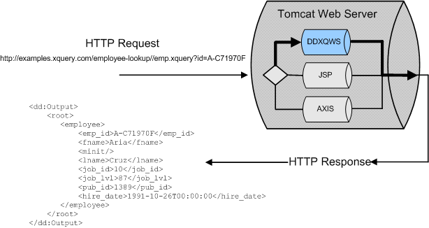
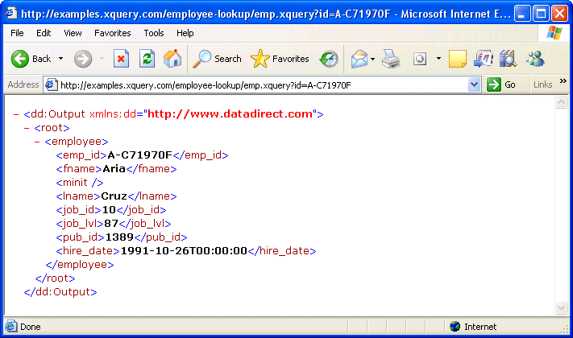
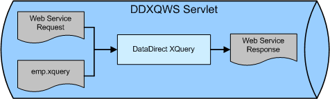

XQueryWebService Framework Architecture
A high-level illustration of the XQueryWebService framework architecture looks like this:

To start, an HTTP request is submitted to a Web server (a Tomcat Web Server in this case). The URI used to invoke the Web service takes the following form:
http://examples.xquery.com/employee-lookup/emp.xquery?id=A-C71970F
where:
- http://examples.xquery.com/employee-lookup/emp.xquery is the location of the XQuery Web service. The Web service was created by saving an XQuery to the employee-lookup directory where the Tomcat Web Server is running.
- id=A-C71970F is a parameter passed to the XQuery. This parameter, as you will see in a moment, is defined in the XQuery.
When the XQuery is finished, it returns a value using HTTP response, as shown in the following illustration.

Let’s take a closer look inside the DataDirect XQueryWebService directory on the Web server (DDXQWS).

The browser (or an application) submits the Web service request using SOAP or HTTP GET for the XQuery stored on the Web server. Next, DataDirect XQuery unpacks the Web service request and binds its parameters, if any, to the XQuery. In our example, the parameter passed with the Web service request is an ID. The XQuery is then executed and its result (an XML document) is returned to the client.
Example XQuery
To gain a more detailed understanding of what is happening inside the Web service, consider an XQuery, emp.xquery. This XQuery retrieves employee data given a unique ID. The query defines a parameter called id; the query body is just a single FLWOR expression:
declare variable $id as xs:string external; <root>{ for $employee in collection("employee")/employee where $employee/emp_id = $id return $employee }</root>In the following section, Example – Employee Lookup, you’ll see how to implement this XQuery as a Web service on your local machine.
The Web Service Description Language (WSDL)
The Web Service Description Language (WSDL) is a language for describing Web services. If we copy the emp.xquery to a directory, say employee-lookup, where our Java servlet container is running, we can use the following URI to access a WSDL document that describes the Web service that results from our XQuery:
http://examples.xquery.com/employee-lookup/WSDL
Using this tool, we can take a closer look at how our XQuery is described by the WSDL document.
Service Element
The service element – only one per WSDL document – is named after the query file name without its extension. The service contains two port definitions that always have the same name:
SOAPPortandHTTPGETPort, respectively; one for SOAP over HTTP, one for HTTP GET.<wsdl:service name="Service"> <wsdl:port binding="dd:SOAPBinding" name="SOAPPort"> <wsdlsoap:address location="http://examples.xquery.com/employee-lookup/WSDL"/> </wsdl:port> <wsdl:port binding="dd:HTTPGETBinding" name="HTTPGETPort"> <http:address location="http://examples.xquery.com/employee-lookup/WSDL"/> </wsdl:port> </wsdl:service>Notice that the service address or end point is the same for both ports.
For each element
wsdl:portunder the elementwsdl:servicethere is an attribute calledbinding=; the attribute value matches the value of attributename=of one of thebindingelements.HTTPGETBinding
The
HTTPGETBindingdescribes the HTTP verb (in this case it is GET), which operations are exposed, and how the input/output are encoded. The attributelocation=in the elementwsdl:operationis particularly important – it represents the query function to invoke in our query; in this caseempmeans the query body.<wsdl:binding name="HTTPGETBinding" type="dd:HTTPGETPort"> <http:binding verb:"GET"/> <wsdl:operation name="emp"> <http:operation location="/emp"/> <wsdl:input> <http:urlEncoded/> </wsdl:input> <wsdl:output> <mime:mimeXML part="Body"/> </wsdl:output> </wsdl:operation> </wsdl:binding>SOAPBinding
The
SOAPBinding(in the following code sample) describes the encoding style that will be used by the service; the value can be eitherdocumentorrpc(in our case it is alwaysdocument). The styledocumentis completely driven by the schema definition associated with the message, so the resulting XML fragment is more elegant. The stylerpcassumes the creation of a wrapper element that matches the underlying function name to encapsulate the function arguments. The XML on the wire might look the same, but it is conceptually different.Each
wsdlsoap:operationdefines the attributesoapAction=that, similar to the attributelocation=inhttp:operation, represents the function name;soapAction=must be encoded as an HTTP header in the Web service request.The attribute
use=in the elementwsdlsoap:bodycan be eitherliteralorencoded. (In the generated WSDL it will be alwaysliteral, as suggested by the OASIS WS Basic Profile 1.0, to improve interoperability between different client implementations.) The message representation on the wire has the child element of the elementwsdlsoap:body, which matches the global element defined in the XML Schema and is declared in the related message part.The attribute
type=in the elementbindingmatches the attributename=of one of the elementportType. The elementportTypeassociates one message for the input and one for the output to each operation.<wsdl:binding name="SOAPBinding" type="dd:SOAPPort"> <wsdlsoap:binding transport="http://schemas.xmlsoap.org/soap/http" style="document"/> <wsdl:operation name="emp"> <wsdlsoap:operation soapAction="emp.xquery" style="document"/> <wsdl:input> <wsdlsoap:body use="literal"/> </wsdl:input> <wsdl:output> <wsdlsoap:body use="literal"/> </wsdl:output> </wsdl:operation> </wsdl:binding>For each query function there is a pair of messages (
inputandoutput) for each binding (SOAPPortandHTTPGETPort). Having different messages for each binding allows, for instance, simple types like xs:string or xs:integer to be used for HTTP GET, which can be easily expressed inline as a URI.<wsdl:portType name="SOAPPort"> <wsdl:operation name="emp"> <wsdl:input message="dd:empInputMsg"/> <wsdl:output message="dd:OutputMsg"/> <wsdl:fault name="nmtoken" message="dd:FaultMsg"/> </wsdl:operation> </wsdl:portType> <wsdl:portType name="HTTPGETPort"> <wsdl:operation name="emp"> <wsdl:input message="dd:empInputMsg"/> <wsdl:output message="dd:OutputMsg"/> <wsdl:fault name="nmtoken" message="dd:FaultMsg"/> </wsdl:operation> </wsdl:portType>The element
wsdl:messagemay have multiple sub-elements calledwsdl:part; eachpartreferences either an XML Schema global type or global element. OASIS WS Basic Profile 1.0 suggests using only onepartand a global element. To mimic the validation process against an XML Schema, the validation always starts from a global element – the document root.<wsdl:message name="empInputMsg"> <wsdl:part name="parameters" element="dd:emp"/> </wsdl:message> <wsdl:message name="OutputMsg"> <wsdl:part name="Output" element="dd:Output"/> </wsdl:message> <wsdl:message name="FaultMsg"/>Finally, the WSDL describes the element
typeswhere the XML Schema types are defined. For each message, the XML Schema defines two global elements – one for the input and one for the output.<wsdl:types> <wsdl:types> <xs:schema xmlns:xs="http://www.w3.org/2001/XMLSchema" targetNamespace="http://www.datadirect.com" attributeFormDefault="unqualified" elementFormDefault="qualified"> <xs:import schemaLocation="employee.xsd" namespace="http://www.employee.com"/> <xs:element name="emp"> <xs:complexType> <xs:all> <xs:element type="xs:string" name="id"/> </xs:all> </xs:complexType> </xs:element> <xs:element type="xs:anyType" name="Output"/> </xs:schema> </wsdl:types>